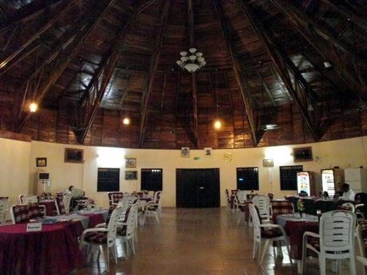

مكان حديث للمؤتمرات والأحداث الشركاتية
قاعة رقمية متعددة الأغراض هي منشأة حديثة في يولا، مصممة لاستضافة مجموعة واسعة من الأحداث الشركاتية والتعليمية. القاعة مجهزة بتكنولوجيا صوتية بصرية حديثة، وإنترنت عالي السرعة، وترتيب جلوس مرن، مما يجعلها مثالية للمؤتمرات والندوات وورش العمل والاجتماعات التجارية. أجواؤها المهنية والمعاصرة تجعلها الخيار المفضل للمنظمات التي تتطلع إلى استضافة حدث عالي التقنية ومنظم.